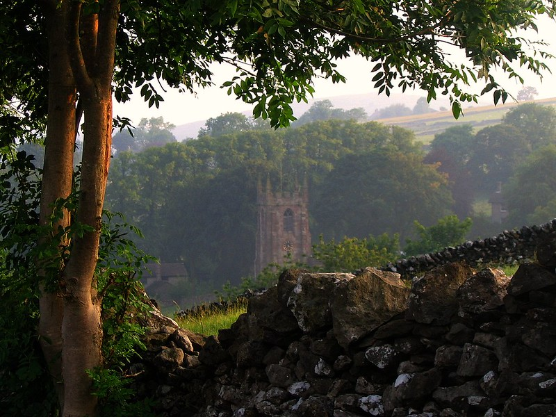

Amelia is a halfling which is half human and half demon. But no the evil demon we are use too these are cooking demons. She hides out in an abandon church becuase her town does not accept her for who she is. Her cooking is her form of coping with being loney most of the time. But, what she doesn't know is that someone is always there as she is cooking.
 "St. Giles Church in the Village of Hartington in Derbyshire" by UGArdener is licensed under CC BY-NC 2.0